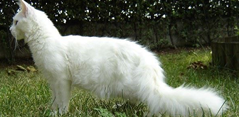

породы кошек которые имеют белый окрас
Мейн-куны легко поддаются обучению, ласковы и общительны. Обычно они спокойны и прекрасно себя чувствуют среди собак, других кошек и людей. Порода хорошо адаптировалась к выживанию в суровом климате Новой Англии, поэтому для нее характерны хорошее здоровье и выносливость.
maine
coon

Британская короткошерстная кошка — ласковая, игривая и преданная. Она очень общительна с членами семьи и близкими друзьями, хотя, как и многим кошкам, ей может потребоваться некоторое время, что бы привыкнуть к незнакомцам.